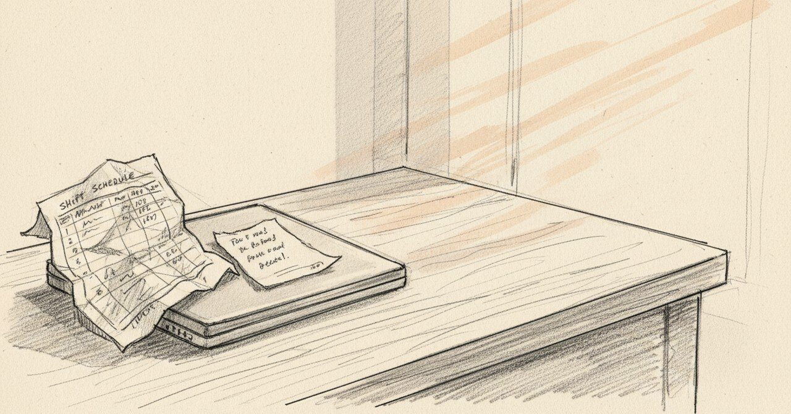

「神戸を抜いた」と書いた夜から、「会社が事故りにくくなる」と書く今へ

2025年1月5日、0時20分、ノートに「ランチ50万以上売れた」と書いた。10連勤の後、実家にいた。
今日の現場
2026年1月19日、外国人と高校生のための労働時間管理ツールが完成した。
シフト表を貼り付けるだけで、7日間のローリング累積を出してくれる。外国人アルバイトの週間28時間制限。26時間以上28時間未満はアラート色、28時間以上はアウト色。GPTに作ってもらったエクセルツールだ。
人事部と各エリアマネージャーに共有する文面を整えて、こう書いた。
「お疲れ様です。外国人、高校生のための労働時間管理の管理ツール作ってみました。基本的にはシフト表をそのまま貼り付けるだけで7日ローリング累積など確認できるようになっています」
ノートにはこうも書いている。
「これできてリリースできたのはでかいな。会社が事故りにくくなる」
「うちの会社こういうの苦手だもんな」「うちの会社のマネージャー陣こういうことしないんだよね。じぶんところのエリア守ることしかしない」
自分のエリアを守ることはもう、十分やってきた。今は、自分のエリアの外側にも届くものを置きたい、と書いている。
あの頃と今
1年と2週間前のノートに戻る。
「0時20分。今日は10連勤後の実家移動でなかなかハードだった。ランチ50万以上売れた上にディナーもそこそこ売ってくれたおかげで神戸を抜いてこの年始期間で一番売上を獲得できた店舗になることができてとても誇らしい」
「営業に入ってくれてるそれぞれがポテンシャルを示してくれたと思っててとても嬉しい」
「実家へ来た後は結果的に来て良かったなって思った。とてもめんどくさい思いではあったが、やろうと決めたことを必ずやるように向かうことは自分にとってとても重要らしい」
「あー。なんか楽しいなー。明日も頑張ろう。新しいことにチャレンジしなきゃ」
その夜の私は、自分の店舗の数字に「誇らしい」を感じていた。神戸を抜く、という比較の物差しで誇らしさが立っていた。
頭の中
1年前は、自分の店舗が他店を抜くことに誇らしさを感じていた。今は、自分の店舗の外、会社全体の事故を減らすことに手をつけている。
物差しが、エリアの外に伸びた、ということだろう。神戸を抜いた夜の自分には、たぶん他店の事故率なんて視界に入っていなかった。「新しいことにチャレンジしなきゃ」と書いた、そのチャレンジの中身が、結果的にエリアの外を見るほうへ動いた。
別の見方もある。エリアの外を見られるようになったのは、エリアの中で50万を売り切る経験が積まれたからだ。先に小さい範囲で勝てなかったら、たぶん大きい範囲は見えなかった。神戸を抜いた夜は、エリアの外を見るための踏み台でもあった。
まだ途中のこと
「会社が事故りにくくなる」と書いて、ツールを共有した。共有した後、それがどれくらい使われているかは、まだ追っていない。
エリアの外に届くものを置く、という方向に向き始めた。届いたかどうかは、もう少し時間が経ってから見える。
こうした記録を続けています。よければ、また読みに来てください。
#日記 #マネジメント #AI活用 #個人開発 #AkariLab